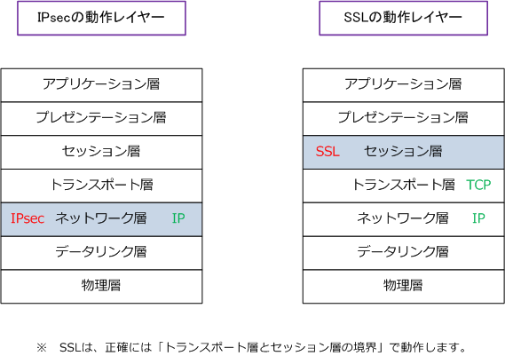
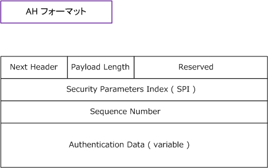
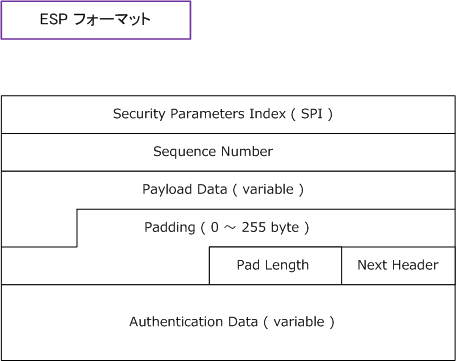
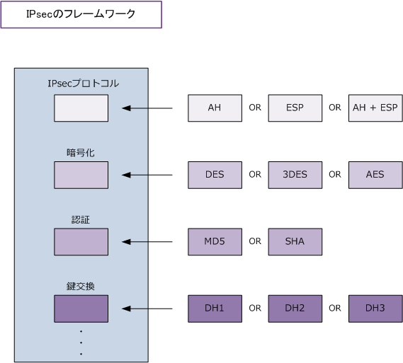

IPsec ( Security Architecture for IP )
IPsecとは
IPsecは、暗号化システムの技術によりネットワーク層にて、データのセキュリティを保護するのに使用 されるプロトコルです。 IPsecは、AH、ESP、IKEなどのプロトコルから構成されています。このIPsecを 使用したVPN接続により、インターネットなどの公共インフラでも安全に通信することが可能になります。
IPsecの動作するレイヤー
IPsecはネットワーク層で動作するので、上位層であるトランスポート層でTCPであろうがUDPであろうが 問題なく動作するし、制限もない事から特定のアプリケーションに依存しません。ただしネットワーク層は IPである必要があります。ちなみにIPsecとは関係ありませんが、SSLはセッション層で動作します。そして ネットワーク層はIP、トランスポート層はTCPである必要があります。このためTCP/IPを利用するすべての アプリケーションは「HTTP/FTP/SMTP」など利用できますが、UDPのアプリケーションは使用できません。

IPsecを構成する2つのプロトコルと鍵交換のプロトコル
IPsec自体は、その名のとおり、セキュリティのアーキテクチャです。IPsecはAH、ESP、IKEなどの複数の プロトコルから構成されています。AHは「Authentication Header」の略であり、その名の通り、認証機能 を持っています。ESPは「Encapsulating Security Payload」の略であり、ペイロード部に対して暗号化を 行うことができます。IKEは「Internet Key Exchage」の略であり鍵交換を行う事ができるプロトコルです。
| IPsecプロトコル | 役割 | プロトコル種別 |
|---|---|---|
| AH | ・ パケットが改ざんされていないかどうか認証を行う。(HMAC) ・ パケットの暗号化はできない。 |
IPプロトコル番号 51 |
| ESP | ・ パケットが改ざんされていないかどうか認証を行う。(HMAC) ・ パケットのペイロード部の暗号化 ( DES or 3DES or AES ) を行う。 |
IPプロトコル番号 50 |
| IKE | ・ 秘密鍵情報の交換を安全に行う。IKEは [ ISAKMP/Oakley ] のこと。 つまり、ISAKMPプロトコル上でOakley鍵交換の手順を実装したもの。 ・ Diffie-Hellman鍵交換のアルゴリズムはOakleyコンポーネントの１つ。 |
UDPポート番号 500 |
RFC2406とRFC4303形式のESPには認証トレーラ機能があります。これにより、AHを併用しないで 改ざん防止をできます。従ってIPsecは、AHなしで、ESPとIKEだけでも構成することができるのです。 ただしESPの認証トレーラ機能では、IPヘッダの部分まではその完全性を保証することはできません。
また、ESPが全てのセキュリティサービスを実装できるにも関わらず、AHも実装させることがある理由は AHがESPより負荷がかからない、AHに輸出規制がない、AHはIPv6コンプライアンスに必須である事です。 ※ 現在の日本におけるIPsec-VPNといえば、AHを使用しない「ESPとIKE」だけによるIPsec-VPNが一般的な実装方式と言えます。

| AHの各フィールド | 各フィールドの説明 |
|---|---|
| Next Header | AHの後にくるプロトコルのタイプ（TCP/UDPなど）を示すフィールド。 |
| Payload Length | AHの長さを示すフィールド。 |
| Reserved | 将来用に予約されたフィールド。0 に設定されている。 |
| SPI | そのパケットに利用されている SA（ Security Association ）を示すフィールド |
| Sequence Number | 各パケットに割り振られるシーケンス番号を示すフィールド。これによりパケットリプレイを防止可。 |
| Authentication Data | そのパケットのHMAC値が示されたフィールド。その値は ICV（Integrity Check Value）と呼ばれる。 |

| ESPの各フィールド | 各フィールドの説明 |
|---|---|
| SPI | そのパケットに利用されている SA（ Security Association ）を示すフィールド |
| Sequence Number | 各パケットに割り振られるシーケンス番号を示すフィールド。これによりパケットリプレイを防止可。 |
| Payload Data | Next Headerのフィールドで定義されるデータを含む可変長フィールド |
| Padding | ペイロードデータの長さをアルゴリズムが要求するサイズまで調節するための調整用フィールド。 |
| Pad Length | Paddingバイトのバイト数を示す。 |
| Next Header | ESPの後にくるプロトコルのタイプ(TCP/UDPなど)を示すフィールド。 |
| Authentication Data | そのパケットのHMAC値が示されたフィールド。その値はICV（Integrity Check Value）と呼ばれる。 |
IPsecを理解するための全体イメージ
先の説明どおり、IPsec自体はセキュリティアーキテクチャなので下図の通り枠組み規定しているだけです。 従って、IPsec通信の際に実際に使用するプロトコル、暗号化アルゴリズムを選択していく必要があります。 例えば上記説明したIPsecプロトコルにはAH、ESP、AHとESPの3つの選択肢があるのでそれを選択します。 その他にも、この後のIPsecの解説を読めば分かると思いますが、暗号化、認証、鍵交換などを選択します。

実際にCiscoルータなどでIPsecのための設定を行う際に、上図のキーワードを入力していくことになります。